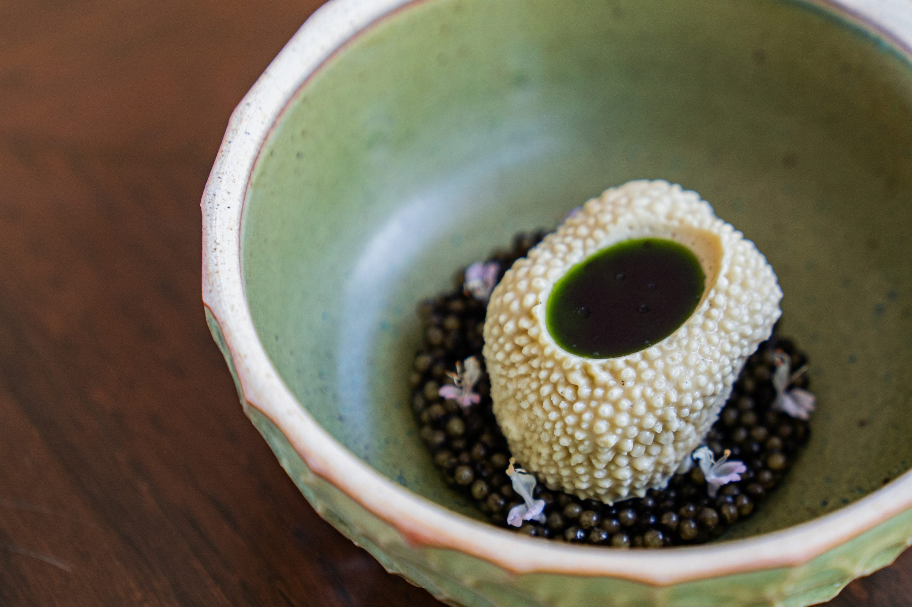
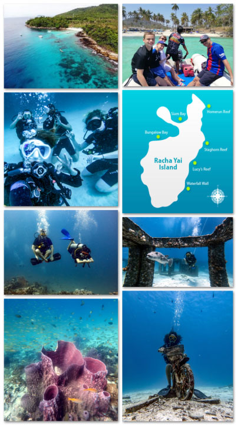
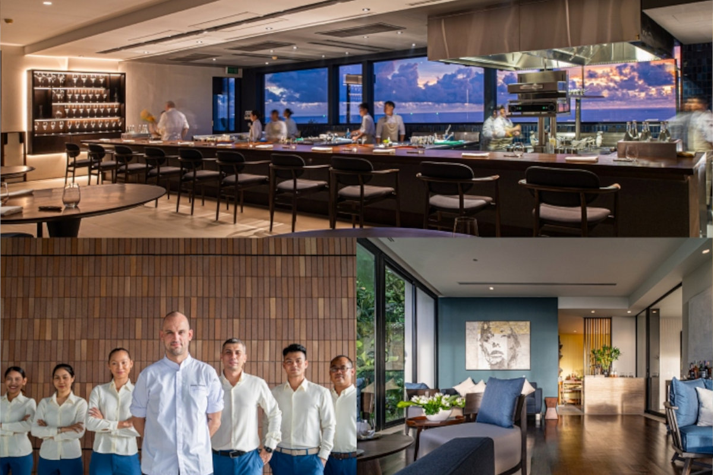
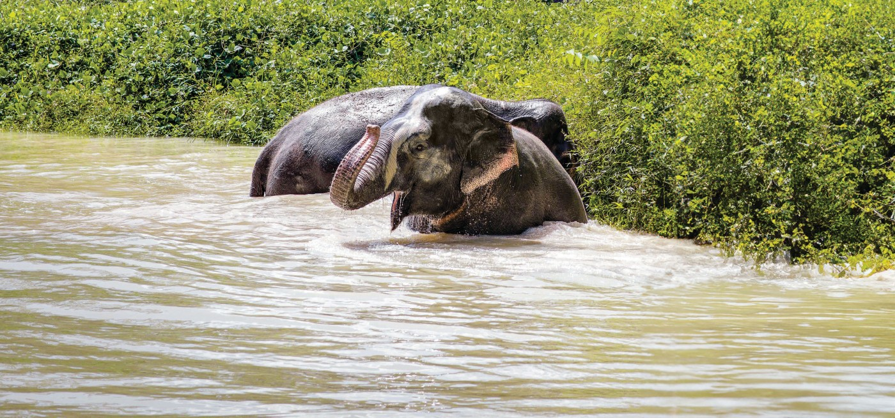
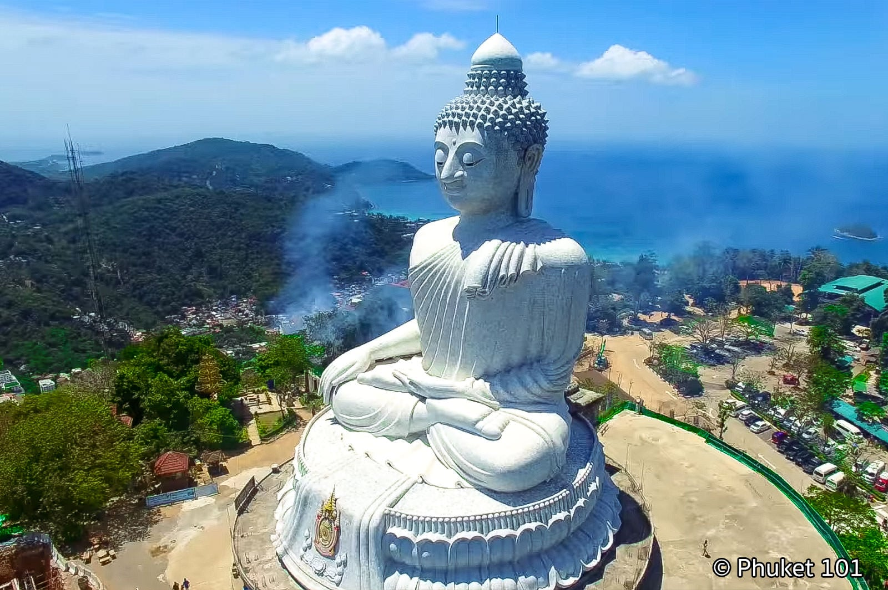

Northern Phuket puts PRU within reach without a taxi call. Choose proximity to the restaurant first, preference second.
Catch Beach Club or Carpe Diem — Bang Tao beachfront, ~6 min from Trisara. [2]
Quiet dinner, early night. Saturday is the PRU day — arrive rested.
Both depart early and return mid-afternoon, leaving 2–3 hours to rest and dress before the 18:00 sitting. From Bang Tao the margin is tight; from Trisara you walk to dinner.

Bang Tao beach (~5 min, usually swimmable in June) [28] or resort pool. Keep the window — you need 60–90 min to shower and dress for PRU.
Surin Beach · 10 min south of Trisara · photogenic, uncommercialised. In June it runs monsoon surf — not for swimming, beautiful to walk. [8]

"PRU" names both the acronym and the Southern Thai word for where water and land come together — the same philosophy that connects this meal to Sunday morning's elephant sanctuary and the reef-safe boat day. [5]

Phuket Elephant Sanctuary, Paklok — half-day, no-touch, no-ride. [18] Booking required in advance. Phasing out hand-feeding from April 2026.
~30 min drive north from Trisara/Cherngtalay. Returns by 12:30–13:00.
Back to base for lunch. Afternoon is the south loop — drive the full circuit: Karon Viewpoint → Big Buddha → Wat Chalong → Old Town.
Karon three-beaches viewpoint — free parking, quieter than Promthep. Best light 4–5pm. [22]
Big Buddha — reopened 3 March 2026 after 18-month closure. White marble glows 16:00–17:30. [20]

Wat Chalong — 10 min from Big Buddha, largest Buddhist temple on the island. Quiet at this hour. [21]
Lard Yai Walking Street runs from 16:00 every Sunday — street food, craft vendors, heritage Sino-Portuguese shophouses. Arriving at 18:00 means peak atmosphere and most stalls open. [19]
| Skip | Why | Use instead |
|---|---|---|
| Khai Islands snorkelling | ~80% of reef dead; prior visitor bans [23] | Racha Yai |
| Similan Islands | Closed 16 May – 14 Oct [12] | Racha Yai or Phang Nga Bay |
| Any elephant riding or bathing camp | Contact models inconsistent with Green Star itinerary ethic [24] | Phuket Elephant Sanctuary (no-touch) |
| Tiger-photo attractions | Exposed by 2016 Kanchanaburi raid [24] | Gibbon Rehabilitation Project, Khao Phra Thaeo |
| Patong / Bangla Road as base | 40 min from PRU, incompatible atmosphere [10] | Bang Tao or Trisara |
| West-coast swimming when red flag flies | Non-advisory; rip currents fatal [13] | Resort pool; Nai Harn (south, sheltered) |